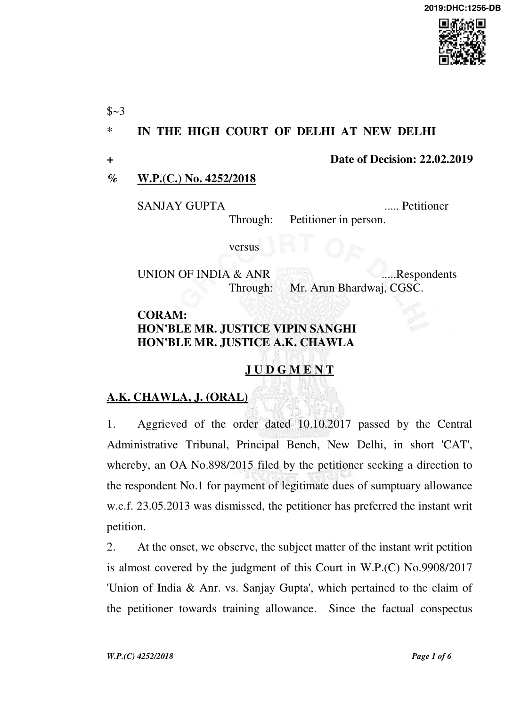

giving rise to both the petitions is identical, but, for the nature of the claim, it would suffice, if, the facts and the conclusions drawn by this Court in W.P.(C) No.9908/2017 are ipso facto taken into account in this case. The relevant and the operative portion of the judgment rendered by this Court in W.P.(C) 9908/2017 is as under: "2. Concisely, the relevant facts are that the

respondent, who is an officer of Indian Telecom Service and joined as Asstt. Executive Engineer, had achieved the post of Supdt. Engineer, when he came to be posted with BSNL, Vijayawada on 07.12.2004. For the absorption of Group 'A' Officers in BSNL/MTNL the options were invited in the years 2005, 2008 and 2011. Respondent however did not opt for it. Thus, the respondent continued to remain on the cadre strength of Ministry of Telecommunication, which was his parent department. On 17.05.2013, the respondent came to be posted with National Telecom Institute as Director (Elect.) until further orders inter alia with the stipulation that the pay and allowances shall be paid by DoT Hq./TEC/respective co-located TERM Cells/NTIPRIT. Having joined such posting with NTIPRIT, which was a training institute, the respondent asserted his claim for training allowance. On being declined, the respondent approached the Central Administrative Tribunal in short 'CAT', which ultimately came to be allowed vide the impugned order dated 13.07.2016. Review sought thereof by the petitioners came to be dismissed vide the impugned order 22.08.2016. Feeling aggrieved, the petitioners have preferred the instant writ petition.
- Pertinently, the petitioners assail the impugned order on the premise that the post on which the respondent was posted with NTIPRIT, was not a sanctioned post and therefore, the operation of OM dated 05.09.2008 for grant of training allowance to the respondent was not attracted. Construction of the said OM, as such, has been the question
W.P.(C) 4252/2018
for consideration.
- O.M. no. 12017/2/86-Trg.(T&P) dated 31.03.1987 provided for a training allowance to the Govt. employees, who join a training institution meant for training Govt. officials as a faculty member, other than as a permanent faculty member. Relevant portion thereof reads, as follows : "Subject: Improvement in service conditions of faulty members in Training Institutions.

Reference is invited to this Ministry's OMs of even number dated 7.2.86, dated 17.4.86 and dated 3.6.86 on the above mentioned subject.
- Taking into account the introduction of the Fourth Pay commission pay scales and the various references received from the Ministries/Departments the following, revised guidelines are issued in supersession of the previous OMs, from this Ministry, referred to above. i. When an employee of Government, joins a training institution meant for training government officials as a faculty member, other than as a permanent faculty member, he will be given a training allowance at the rate of 30 percent of his basic pay drawn from time to time in the revised scales of pay. Note : Basic pay, in this context, means, a. in the case of an officer belonging to an All India Service, the basic pay, which he would have drawn on deputation to the Centre. b. in the case of an officer belonging to a Central Service
- the basic pay which he would have drawn on deputation to the Centre, if he joins a Training Institution on deputation outside his Department/Ministry.
- the basic pay, which, he would have drawn in his cadre if he joins a Training Institution within his Department/Ministry............................................................................................................................................................................"
W.P.(C) 4252/2018
- Consequent upon the acceptance of the report of the Sixth Central Pay Commission, the President accorded approval to the Regulation inter alia for grant of training allowance vide OM no. 13024/1/2008-Trg.I dated 05.09.2008 in training academies and staff colleges w.e.f. 01.09.2008, in the following manner : "Training allowance
- In modification of O.M. No. 12017/2/86-Trg. dated

9.7.1992, Training allowance will be raised to 30% of basic pay for trainers drawn from Government, universities and academic institutions working as faculty members, other than permanent faculty in the National/Central Training Academies and Institutes for Group A offers.
- Separate deputation allowance will not be payable to the trainers in receipt of Training allowance.
- Training allowance will continue to be drawn for the period the trainer is on study or tour related to training activities.
- For other training establishments, the rate of training allowance will remain unchanged.
- The other conditions attached to the Training Allowance in this Department's O.M. dated 31.3.1987 will remain the same.....................................................................................................................................................................................................
- Insofar as persons serving in the Indian Audit & Accounts Department are concerned, these orders issue after consultation with the Comptroller & Auditor General of India. These orders shall take effect from 1st September, 2008.
- ..................................................................................................." Later, O.M. no. 13016/05/2011-Trg.(ISTM) dated 11.11.2013 came to be issued giving clarifications to O.M. dated 05.09.2008, as follows: ".................................................................................................................................................................................................................
- 30% training allowance of the basic pay is admissible to trainers/faculty on deputation only in those National/Central
W.P.(C) 4252/2018
Training Academies and Institutes which impart inducting training to directly recruited Group 'A' officers.
- In the 3 of the Sub-para (i) under the heading 'Sumptuary Allowance' of the aforesaid O.M., the words "and other training institutes/establishments as well" may be added after the words 'Group 'A' Officers.
- This would come into effect from the date of issue of this O.M................................................................................................................................................................................................................."

- xxx xxx xxx
- Petitioners persist to assert and assail the impugned order on the premise that the posting of the respondent with NTIPRIT cannot be treated as deputation and against a sanctioned post and therefore, the subject OMs had no applicability in the case in hand. In State of Punjab vs. Inder Singh, (1997) 8 SCC 372, the Supreme Court dealing with the meaning and the concept of deputation has observed that the deputation is deputing or transferring an employee to a post outside his cadre, that is to say, to another department on a temporary basis. The case of the respondent is not beyond the meaning so defined in the judgment supra. More significantly, the drawl of salary by the respondent from NTIPRIT clearly shows that the respondent was working with NTIPRIT on deputation, otherwise, his such posting would have been termed to be in diverted capacity. Then, the list Annexure-A6 clearly shows that the respondent is a faculty of NTIPRIT in its training unit, which is not in dispute. As regards the plea of the petitioners that the respondent was not posted there against any sanctioned post, in our considered view, is wholly misconceived. It is for the reason that the OM dated 01.09.2008 by itself is attracted for the government employees, who are other than the permanent faculty. Even otherwise, the subject OMs do not make any exception to its applicability to the deputationists against sanctioned post only."
W.P.(C) 4252/2018
- The claim in the instant petition is founded on the same OMs and in view of the foregoing conclusions drawn by this Court, we do not see any reason as to why the petitioner should not be also entitled to the sumptuary allowance, as may be legitimately due to him.

- In view of the foregoing, the writ petition is allowed and the respondent No.1 is directed to make payment of the legitimate dues towards sumptuary allowance to the petitioner, within four weeks from today, failing which, the outstanding amount shall attract interest @ 8% p.a. Petition stands disposed of accordingly. No order as to costs. A.K. CHAWLA, J.
VIPIN SANGHI, J. FEBRUARY 22, 2019 nn
W.P.(C) 4252/2018